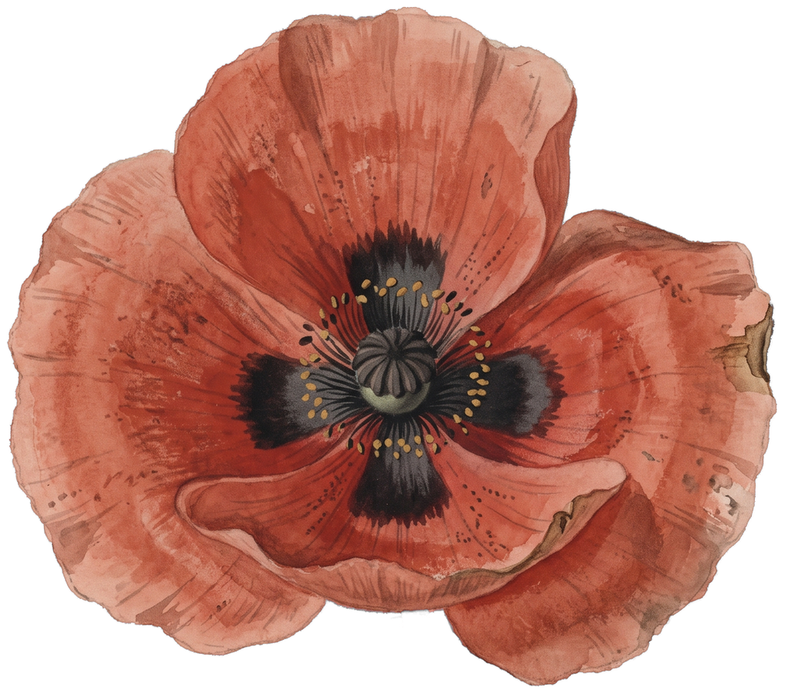
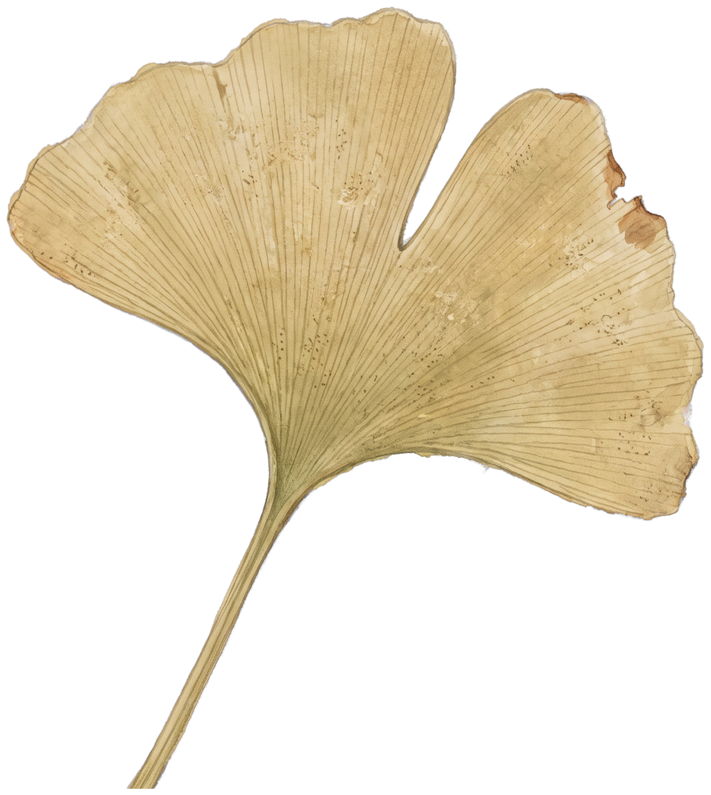
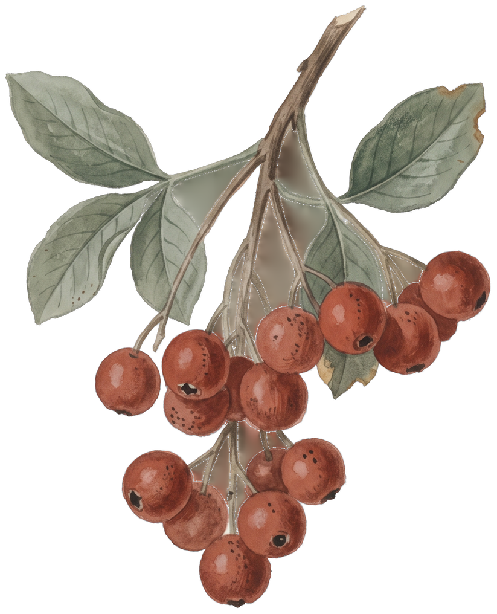
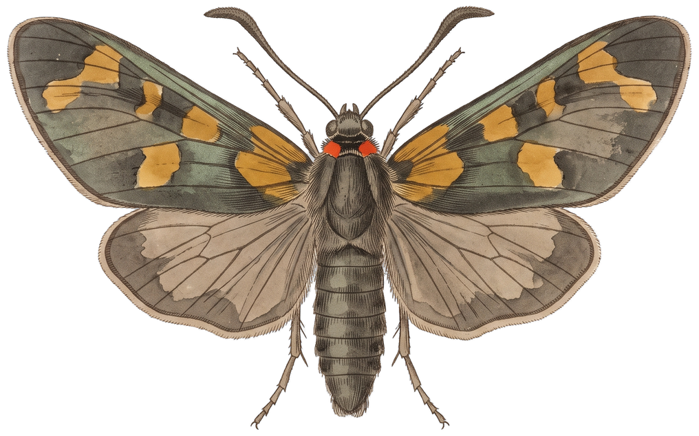

Supply
- Transparent-background PNG, no drop shadow, no paper baked in.
- ~1000px on the long edge, one specimen per file, trimmed tight.
assets/botanical/<family>-<nn>.png — e.g. bloom-01.png.- Register each filename in
SPECIMENS in Specimen.jsx — 48 are registered.
- Colour is left exactly as scanned. Aged and faded is the point.

bloom · 15

leaf · 10

sprig · 9

wing · 14
Rules
- Specimens only ever sit on a paper ground — cream, sage or tan. Never white, never a wash.
- One glyph per deck, on the title or a single section break. It is a signature, not a motif.
- 12–16 pieces per glyph. Below 10 the letterform breaks; above 22 it turns to soup.
- Scatter accents stay under 22% opacity and outside the text column.
- Never on the same slide as an orb. Botanicals carry title and section slides; orbs carry trend, data and process slides.
- No rounding, cropping to circles, duotone or coral tinting. No CSS
filter.
- Rotation within ±18° for accents, ±34° inside a glyph. Nothing sits perfectly upright except a face-on bloom.